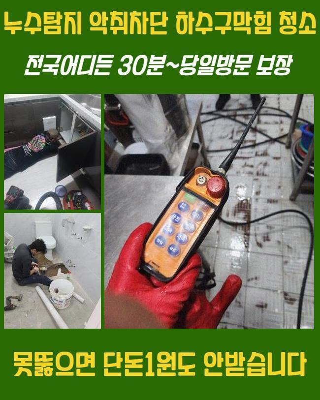
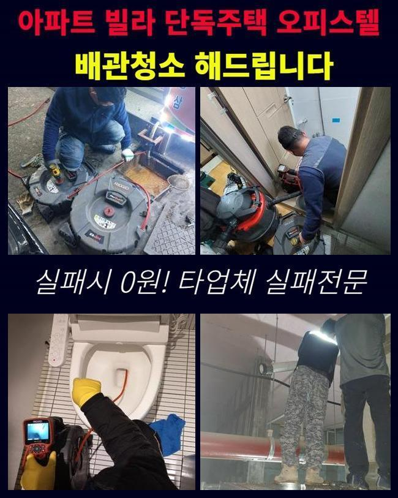
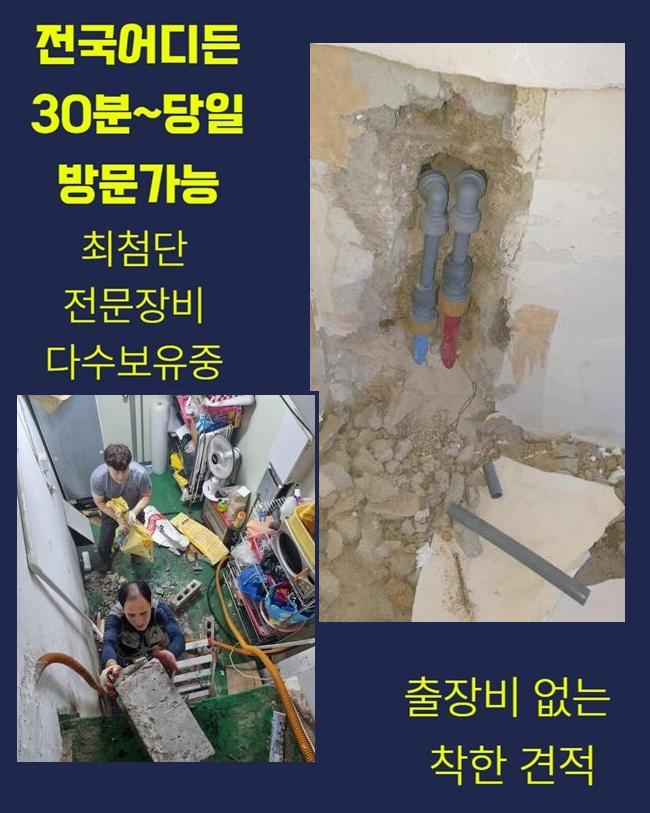
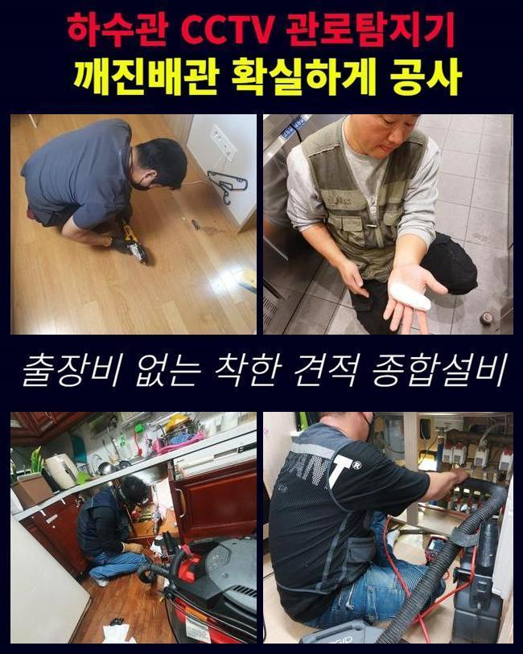
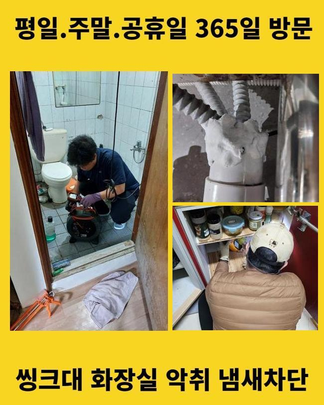
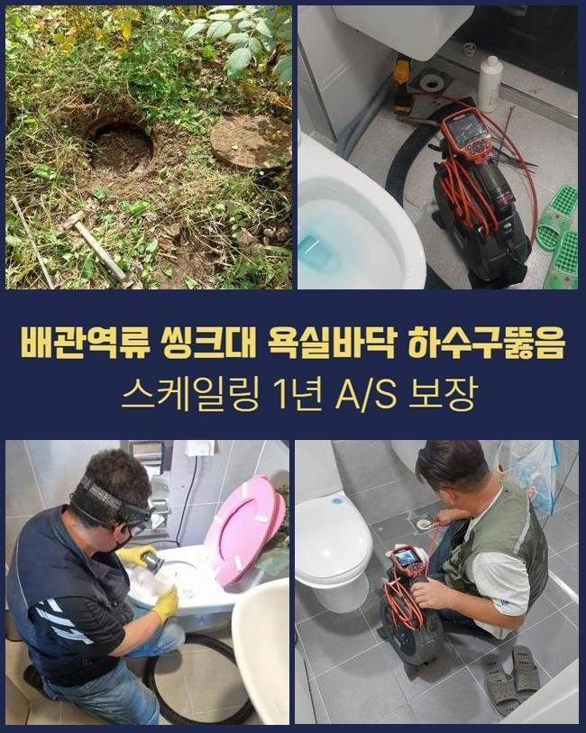
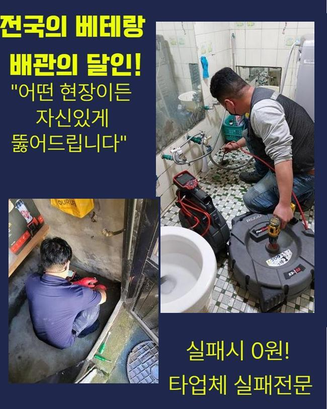

🏠 광진구 구의동변기역류 자양동 오수맨홀청소 설비
용인 변기막힘 전문 시공 후기

📋 작업 개요
- 위치: 용인
- 서비스 유형: 변기막힘, 하수구막힘, 배관막힘, 맨홀막힘, 역류해결, 뚫는업체, 배관청소, 악취차단
- 작업 일시: 2024. 11. 19. 16:41
- 업체명: 하수구수사대 (010-5615-2118)
🔍 문제 상황
광진구 구의동변기역류 자양동 오수맨홀청소 설비
집의 하수구에서 잘못된 점이 생겨서 하수구의 오류가 빈번해졌다는 고객님의 전화를 받아서 이 고충을 원만하게 극복시켜 드리기 위하여 접수해주신 주소지로 향했습니다
하수관 라인이 막히는 사태는 굉장한 지장을 줄 수 있다보니 민첩한 동시에 제대로 교정해야 합니다
나중으로 떠넘기면 일을 더 키우게 되니 방심하기보다는 급히 진행하는 것이 향상된 결과를 도출합니다
오늘의 작업은 여러 가구가 거주하는 빌라에서 하수구 속이 차단되었고 화장실 내에 장착된 하수구에서 물이 스며나오는 사태를 경험하신 고객님이 수선을 도와달라고 하셨습니다
순식간에 일어난 막힘으로인해 허둥지둥 하다가 셀프로 뚫어보려 하다가 결국 저희를 찾아주신 겁니다
간단한 인사를 나누고는 점검 기기를 활용해서 검사에 들어가 보았습니다
아니나 다를까 욕실 바닥은 하수의 배수가 원활하지 않고 물기가 역방향으로 올라오다보니 찰랑댈 수준으로 물이 가득 차올라 있었습니다
이런 물사태가 화장실 안에만 특정되는 게 아니고 물기가 스며든 범주가 주변까지 침투했습니다
수도꼭지가 설치되어 있는 세면대 도기에서도 물기가 잘 배출이 되지않다보니 바닥까지 축축해지게 됐고 욕실의 턱을 넘어서 거실에 이르기까지 물기로 젖어버렸습니다

🔎 원인 분석
💡 전문가 진단: 정밀 진단 장비를 사용하여 슬러지의 고착 여부를 판명하고 타격/세척 작업을 실시했습니다.
욕실이라는 한정된 공간에서 생긴 하수구 흐름 차단은 물난리를 탄생시켜서 도저히 극복할 수 없는 난제를 만들고 말았습니다
이 문제를 수습해 드릴 수 있게끔 제일 먼저 이루어져야할 일은 확실한 원인 규명과 구조를 꼼꼼히 살피는 것이었어요
하수구의 장애는 간단한 이물질의 침투로 빚어지는 막힘 문제도 흔하지만 망가진 관로라거나 외부 요인으로 인한 변형 등 여러가지 요인들이 통합적으로 문제야기를 하기도 합니다
곳곳을 자세히 들여다봤더니 이곳은 여러 세대배관이 한 지점으로 집중되어 옥외 배관 쪽으로 향하는 시스템임을 알게 됐습니다
이런 구조의 설비는 배수 구간이 하나라도 정체가 된다면 흐름 장애가 빈번하게 도래되므로 사전에 자세히 살피는 게 필요합니다
물만 나가는 게 아닌 배수로는 물때와 기름때 각질층 그리고 잔잔한 찌꺼기들도 풍부하게 누적되어 있으면서 하수의 일반적인 처리를 저해하는 상황이었습니다
상세한 문제의 동기를 넌지시 설명해 드리고 관로를 클리닝하는 본작업으로 막힘을 없앨 접근법에 대하여 차례대로 알려드렸어요
우선적으로 욕실 바닥 공간에 쌓인 물을 퍼내는 단계부터 실시했습니다
물을 빼고 드러난 배관 속사정을 점검해 보았더니 미생물이 만든 석회와 오염물질이 쌓이고 또 쌓여있는 것을 곧바로 알 수 있었습니다
물때와 기름 잔여물들과 석회질은 물의 순환을 제동 걸기도 하지만 시간이 흘러갈수록 더욱 밀착도가 더 높아지므로 뚫기 힘든 장애물을 발생시킬 수 있습니다
따라서 대강만 정리하는 오물의 정돈만으로는 사태가 나아지지 않으며 스케일링을 거침으로써 통로를 말끔하게 정화해야 원기능이 돌아옵니다

🔧 작업 과정
속시원한 청소를 위해서 많은 상황 속에서 전방위적으로 이용하는 샤프트 기계를 도입했습니다
단단한 쇠로 이루어진 사슬이 회전하는 힘으로 벽면에 말라붙은 이물질 전부를 긁어내고 없애는 원리입니다
여러 물질이 말라붙은 석회와같이 배관 벽면에 분리가 힘든 오물들을 세밀하게 갈아서 이전의 형상과 작동을 되살리는 데 명확한 이점을 지니고 있습니다
장비에 속한 사슬로 끈적한 덩어리를 해체하고 거대한 덩어리도 파편화하여 차단됐던 배관을 서서히 상쾌하게 변모시켜주었습니다
꼼꼼하게 스케일링을 끝내고 우리는 이러한 상황을 탁월하게 삭제시켰는지 확신을 얻기 위해 내시경 카메라를 넣어봤습니다
관찰용으로 나온 내시경은 보이지 않는 배관까지도 점검하게끔 보여주는 카메라로 깊숙한 영역까지 살펴보게 하니 정밀한 데이터 수집이 됩니다
매 현장에서 쓰는 내시경을 켜서 관로가 달라졌는지 체크해본 바에 따르면 지저분했던 내부와는 달리 결점없이 청결해진 게 보였습니다
변모한 배관 모습을 고객님께도 생생하게 전달해 드리며 오류가 완벽하게 정리됐음을 알려드렸습니다
어떤 도구를 접목해야 더욱 쾌적한 배관으로 구축할 수 있을지 한참을 생각해 보고 결심을 하게 됩니다
단일 사용이 아니라 혼합으로 도구들을 접목하기도 하며 이 내역에 대해 승인을 구합니다
확인 절차까지 수행하고도 정상 가동이 되나 보려고 배수 상황도 확인했습니다
수도를 전면 개방하여 물이 잘 빠져나가는지 조사해 보았더니 화장실과 주방 모두 잔량없이 빠져나갔으며 확 뚫린 관로를 통해서 바깥의 큰 하수구로 나아가는 현황을 확인하게 됐습니다
이와 같이 막힘의 핵심 요인들을 제거한 후에도 원래 영위하던 정상적인 일상으로 곧장 복귀하실 수 있게 뒷정리도 하고 있습니다
잔수가 남아있는 현장을 깨끗하게 씻어내고 만족도를 얻으실 수 있게 신중히 작업에 임했습니다
하수구에 생기는 장애는 생활의 불편함을 초래하지만 빠른 수습이 결여되어 있다면 더욱 심각한 일까지 연속되기도 합니다
배관이 부서지거나 타 세대에 이르기까지 악영향을 미칠 수 있으니 발견 즉시 고쳐야 합니다
일부 구간만 정돈한다고 전체적인 이슈가 해결되는 만능 조건이 되지 못하니 오염된 모든 곳을 아우르며 신경써서 청결을 유지합니다


✅ 작업 완료
하수시설은 건물 운영이 필수인 설비라서 최대한 빨리 수선에 앞장서야 합니다
게다가 노후화가 이뤄졌다면 괜찮은지 규칙적으로 보면서 체크에 들어가야 제기능을 지킬 수 있습니다
놓친 찌꺼기가 없는지 깊이있게 분석하며 손질을 해드렸기에 재차 생기는 막힘은 찾아오지 않을 것입니다
추가적인 질문이나 문의도 포용적인 태도로 답해드리고 실용적이고 유용한 지침도 안내합니다
하수구에 생기는 여러 문제점들을 보기 좋게 바로잡아드릴테니 고충을 안고 계신 분들은 거리낌 없이 전화주세요




⚠️ 하수구 배관 막힘 예방 및 관리 가이드
- ✅ 머리카락, 비닐, 물티슈 등 물에 분해되지 않는 이물질은 하수구 유입을 절대 금지해 주세요.
- ✅ 하수구 거름망을 씌우고 모여진 이물질은 주기적으로 쓰레기통에 바로 비워주셔야 합니다.
- ✅ 배관 노후가 심할 경우 이물질이 더 쉽게 걸리므로 주기적인 배관 세척(고압세척 등)을 권장합니다.
- ✅ 작업 후 1년 이내 재발 시 하수구수사대에서 무상 A/S 보증 서비스를 제공합니다.
💡 핵심 정리
- 확실한 장비 작업(내시경 점검 및 샤프트 스케일링)으로 원인을 뿌리 뽑습니다.
- 작업 후 1년 이내에 동일한 부위 재발 시 100% 무상 A/S 서비스를 보장합니다.
- 서울 · 경기 · 인천 전 지역에 24시간 언제든 긴급 출동할 수 있도록 항시 대기 중입니다.
❓ 자주 묻는 질문 (FAQ)
🚨 용인 변기막힘 문제로 고민이신가요?
정확한 원인 진단과 확실한 시공으로 재발 없는 해결을 약속드립니다.
24시간 긴급 출동 | 서울 · 경기 · 인천 전지역 | 1년 내 재발 시 무상 A/S